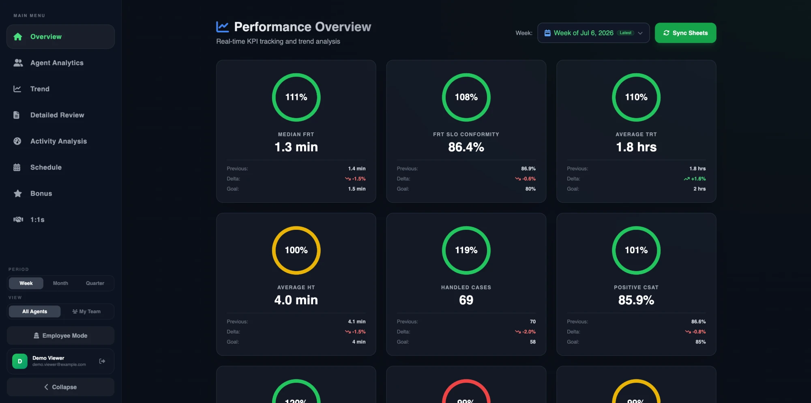
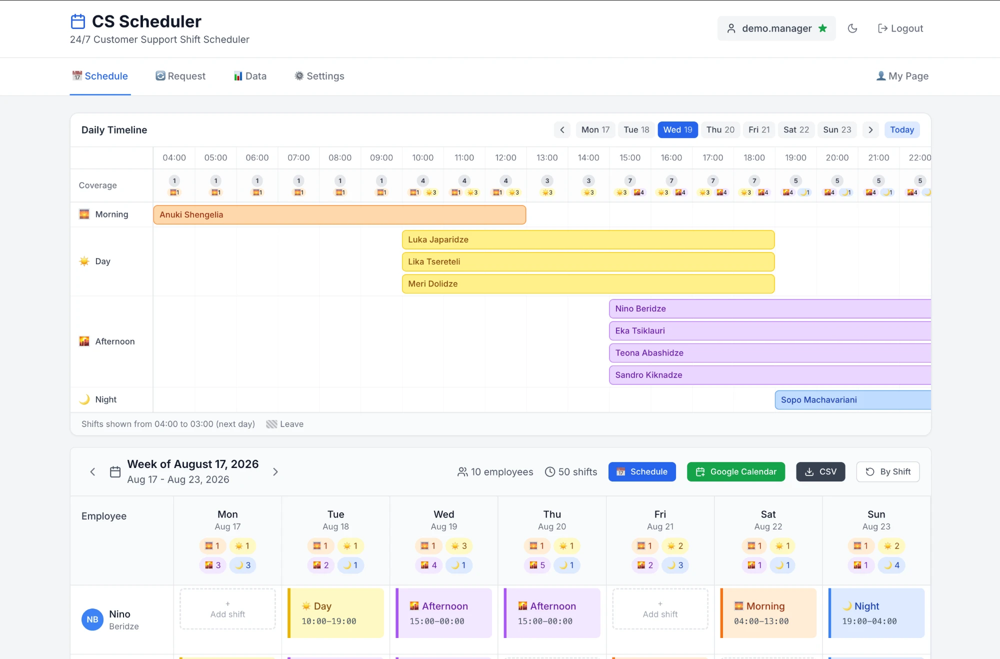
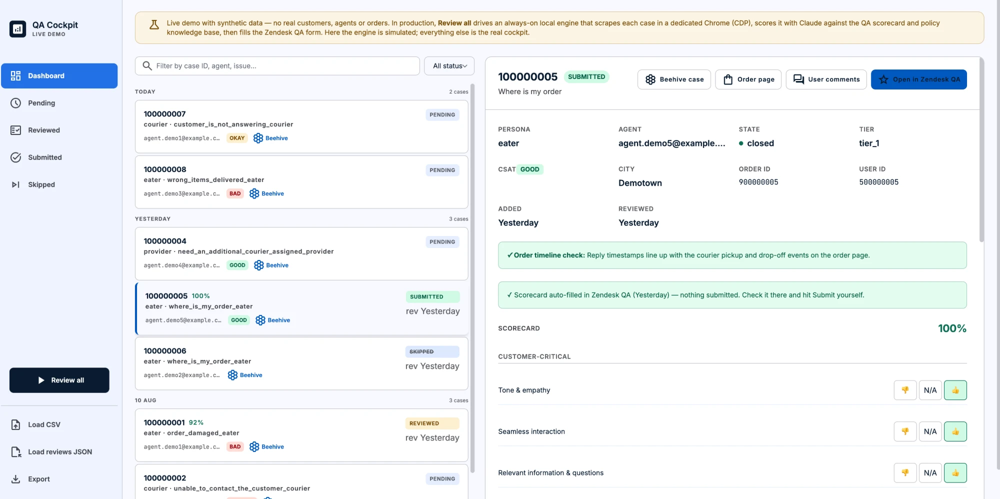
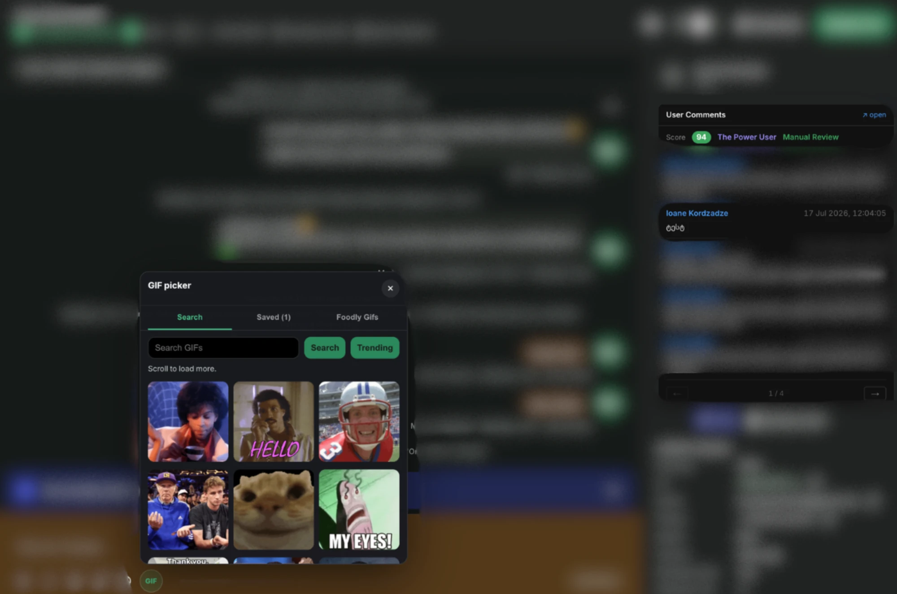

I run a support team — and build the software it runs on.
Two years at Bolt Food, three roles, one pattern: find the structural gap, build the tool, ship it to production. My team's scheduler, KPI dashboard, QA pipeline, and the automations that feed them aren't side projects — they're in daily use, built with no formal engineering support.
Internal tools
Built at Bolt Food for the support org and running in production today — not prototypes. The repos below are sanitized copies: employee names replaced, demo data seeded, credentials stripped.
CS Performance DashboardLIVE DEMO
AI-powered KPI and review platform used by 30 managers across 180 agents. Per-agent trends, team rankings, weighted bonus calculator, AI-generated review drafts with editable prompts, Slack delivery, PDF export. Cut weekly review prep from a full shift to under 2 hours.

CS Shift SchedulerLIVE DEMO
24/7 roster generator built on a constraint solver (Google OR-Tools CP-SAT) — rest rules, coverage minimums, leave imports, shift-swap approvals, overtime tracking, Slack + Google Calendar integrations. Replaced a ~$1,000/yr paid service; ~25 daily users. Backed by a 9-module pytest suite.

QA Review CockpitLIVE DEMO
One-button QA automation: an always-on engine drives a dedicated browser, reads support cases, scores them against the company scorecard and policy knowledge base with Claude, and fills the review queue. Turned hours of manual ticket QA into a supervised pipeline.

Beehive Plus
Chrome extension that augments the internal case-management tool with admin-panel context the support team otherwise had to look up by hand — order details, provider info, and history injected straight into the case page.

About
I started at Bolt Food as a junior operations specialist and became a support manager in under two years. At every step I built software to remove the manual work around me — an invoice generator handling 1,300+ providers, a diagnostic dashboard for delivery delays, then the full toolkit my CS team uses today.
I'm not a traditional engineer. I'm an operator who codes: I live inside the workflows I automate, so the tools fit — and they're in daily use across the support org, from my own 20-agent team to 30 managers on the dashboard. Built with React, Angular, Python, and heavy, deliberate use of AI-assisted development.
Around the tools runs an automation layer: Slack bots that DM every agent their weekly scorecard and admins a 9:00 AM roster, and four scheduled Claude agents that finish the recurring analysis before I start work — chatbot performance reviews from 40+ BI exports, monthly review drafts with every number re-verified by a subagent, my morning checklist. Shared rule: a stale feed means alert and stop, never an estimated number.